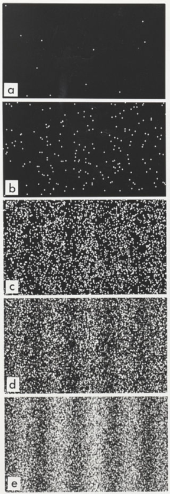

The double-slit experiment
The double-slit experiment is a demonstration that light and matter can display characteristics of both classically defined waves and particles; moreover, it displays the fundamentally probabilistic nature of quantum mechanical phenomena. The experiment was first performed with light by Thomas Young in 1801 as a demonstration of the wave behavior of light. In 1927, Davisson and Germer demonstrated that electrons show the same behavior, which was later extended to atoms and molecules, remained a conceptual mystery in quantum physics until this day. The basic experimental setup shown in Fig. 1 is simple enough. A stream of focused electrons from a hot cathode impinges on a plate with two narrow slits separated a small distance apart. The electrons transmitted through the slits are observed to form a typical diffraction pattern on the screen behind the slit plate. If the intensity of the electrons source is reduced to the point when only one electron at a time is reaching the screen, it produces a pointlike spot located somewhere on the screen, not necessairly just below the slits.
This behavior is certainly in accord with classical concepts of the electron as a particle, with the electron passing through one of the two slits. In the process it is deflected by some angle and finally hitting the screen at some localized point. The deflection has no classical explanation. But there are worse things to come. As more and more electrons are arriving at the screen the overall average macroscopic intensity builds up to a typical diffraction pattern as indicated in the figure. The similarity of the pattern with the familiar diffraction of an optical beam impinging on a double slit plate is immediately apparent. We denote with ψ(x,t) the corresponding wave. In case of free electrons, with momentum p and energy E=p2/2m, we can consider them in accordance with diffraction experimentes as plane waves hence ψ has the form
ψ(x,t) = C exp(k⋅x − ωt) with ω = E/ℏ, k = p/ℏ
When one of the slits is closed, one obtains the distribustions ρ1(x) and ρ2(x) respectively, on the screen. If both slits are open, an interference pattern is created with an amplification of the intensity where the path lenght difference Δl between the slits is an integral multiple of the electron wavelenght λ, that is Δl = nλ. Because of the interference, one has for the intensities ρ(x) ≠ ρ1(x) + ρ2(x). We are familiar with such interference phenomena with just such screen pattern in the optics of light and also in water waves. If a cylindrical electromagnetic wave goes out flor list 1 with electrin field E1(x,t) and one from slit 2 with electrinc field E2(x,t), one gets the following for the above experimental setup: If only slit 1 is open, one has the intensity distribution I1(x) = |E1(x,t)|2 on the screen, whereas if only slit 2 is open, one gets I2(x) = |E2(x,t)|2. Here we have assumed that Ej(x,t) ∝ exp{−ωt}, which is equal to time-averaging the intensities of reals fields, up to a factor of 2. If both slits are open, one must superimpose the waves, and on obtains
E(x,t) = E1(x,t) + E2(x,t)
I = |E(x,t)|2 = I1 + I2 + 2Re(E*1 ⋅ E2)
The third term in the total intensity represents the so-called interference term. Comparison with our electron experiment allows the following conclusion
Hyphothesis. The wave function ψ(x,t) gives the probability distribution
ρ(x, t) = |ψ(x, t)|2
that an electron occupies the position x. Thus ρ(x, t)d3x is the probability of finding the electron at the location x in the volume element d3x. According to this picture, the electron waves ψ1(x, t) and ψ2(x, t), which cause screen darkening ρ1(x) = |ψ1(x, t)|2 and ρ2(x) = |ψ2(x, t)|2, are emeitted from slits 1 and 2, respectively. If both slits are open, then there is a superposition of the wave functions ψ1(x, t) + ψ2(x, t), and the darkening is proportional to |ψ1(x, t) + ψ2(x, t)|2.
There is an important remark: Each electron makes a local impact, and the darkening of the photographic plate by a single electron is not smeared out. ρ(x, t) is not the charge distribution of the electron, but rather gives the probability density for measuring the particle at the position x at the time t.
Interference of individual particles
An important version of this experiment involves single particles (or waves—for consistency, they are called particles here). Sending particles through a double-slit apparatus one at a time results in single particles appearing on the screen, as expected. Remarkably, however, an interference pattern emerges when these particles are allowed to build up one by one (see the adjacent image). This demonstrates the wave–particle duality, which states that all matter exhibits both wave and particle properties: the particle is measured as a single pulse at a single position, while the wave describes the probability of absorbing the particle at a specific place on the screen.
According to this principle the electron can be both a particle and a wave, depending on circumstances. When the single electron approaches the slit plate it mysteriously transforms itself to a wave encompassing both slits. The two wave components originating from the slits interfere behind the slit plate to produce the diffraction pattern, in accordance with regular wave principles. On hitting the screen the electron again transforms itself from a wave to a particle. The only virtue of such an explanation is that it explains the diffraction pattern. But it creates a number of questions regularly referred to as puzzles or paradoxes. One of the most famous is the 'which way' paradox. Classically, the electron must pass through one of the slits. But the diffraction pattern can not be explained unless the electron passes through both slits. If one tries to somehow easure which slit the electron passes through, the diffraction pattern disappears. It appears that nature refuses any attempt to gain information on its secrets, responding with severe penance in the form of experiment failure.